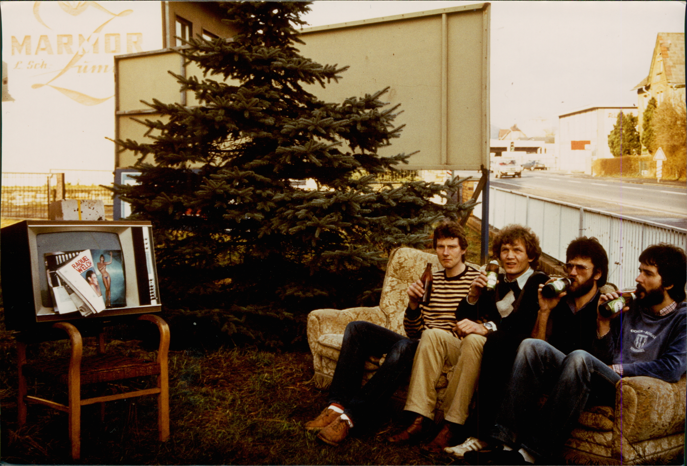
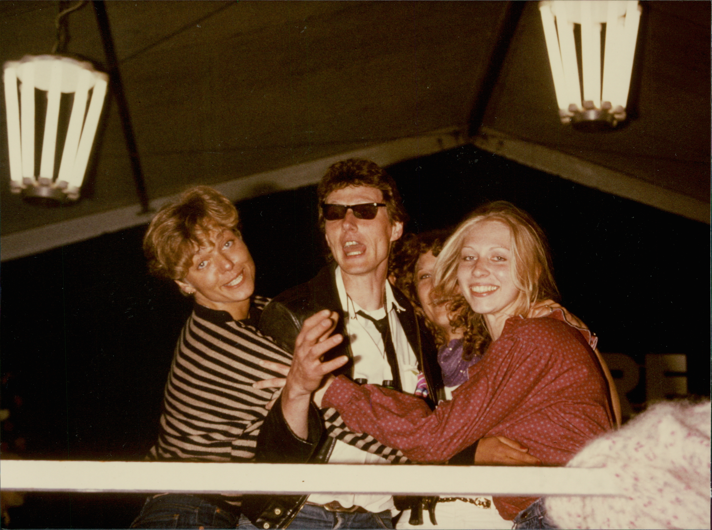

In der Küche von "Club 88". Linkes Bild von links nach rechts: Luigi´s Freundin Karin, Luigi, Hilde, ich. Rechtes Bild: ich mit Resi
1978-1980
In der Rodheimer Straße 88 war immer etwas los. Wenn Rolf nicht feierte, dann wir. Oder wir feierten gemeinsam. Unser Domizil nannten wir passend „Club 88“.
Wie in Krofdorf-Gleiberg kamen auch im Club 88 Menschen mit ganz unterschiedlichem Hintergrund zusammen. Da war die Truppe aus dem Institut für Medizinische Dokumentation: Manni, Wolfgang, Werner und Hannes mit ihren Freunden. Dazu meine Hunsrück-Connection aus dem Dunstkreis von Atzes Kneipe, Rolfs Freunde – Funker, Trinker und andere Spezialisten – und neu hinzu kam Resi´s Truppe von der Chirurgischen Intensivstation der Uniklinik.
Letztere waren dort gelandet, weil sie das Außergewöhnliche suchten. Ich weiß, wovon ich rede. Ich habe selbst unzählige Nachtdienste unter Schwerverletzten und Beatmeten verbracht. Wer auf einer chirurgischen Intensivstation arbeitet, braucht starke Nerven. Und manchmal noch etwas mehr.

Einer von Resis Freunden dort war Pfleger Jochen. Ein interessanter Typ mit stechendem, leicht irrem Blick. Wenn man ihn sah, dachte man eher an einen Ober- oder Chefarzt als an einen Krankenpfleger. Den entsprechenden Habitus hatte er jedenfalls. Deshalb nannten wir ihn „Dr. Stein“. Wenn Jochen zu einer Fete kam, brachte er schon mal seine Knarre mit. Ich vermute bis heute, dass es kein echter Revolver war, sondern eher ein Alarmrevolver für in Seenot Geratene. Sicher bin ich mir allerdings nicht. Zu fortgeschrittener Stunde ballerte er jedenfalls gerne damit in die Luft. Er passte hervorragend zu Rolfs Truppe. Eine explosive Mischung.
Unsere Partys waren laut. Sehr laut. Obwohl sich um uns herum überwiegend Industriebauten befanden, gab es doch einige Nachbarn. Verständlicherweise mochten sie uns nicht besonders. Manche Partys waren nicht einmal geplant. Sie entstanden spontan aus den Resten eines Abends im Harlem.
Der Ablauf war meist derselbe. Vorglühen im Club 88 bis etwa zehn Uhr. Das machte Laune und sparte Getränke in den Kneipen. Anschließend ging es nach Gießen. Wenn wir spät dran waren, landeten wir meist ohne Umwege direkt im Harlem.
Die Strecke kannte ich im Schlaf. Fünf Kilometer geradeaus Richtung Zentrum, dann links in die Westanlage, nach etwa zweihundert Metern scharf links einschlagen, am Fahrbahndurchlass wenden und auf der Gegenfahrbahn parken. Also fuhr ich los. Der Käfer war voll besetzt, und alle hatten bereits ordentlich einen in der Krone - einschließlich mir. Ich schlug das Lenkrad ein, damit ich die 180 Grad Wende durch die Fahrbahnverbindung schaffte. Hatte mich aber etwas verschätzt, wie ich gleich bemerken sollte. Ich war zu spät abgebogen und bretterte voll über den zwanzig Zentimeter hohen Betontrenner.
Resis oranger Käfer bäumte sich kurz auf, es gab einen Wumms, und dann hoppelte der VW mit drei Sätzen auf die Gegenfahrbahn. Erstaunlich: der VW lief weiter. Ich dachte: wie in der Werbung:
„Er läuft und läuft und läuft …“
Wir waren alle heil. Der Käfer hatte eine kleine Schramme. Also parkten wir, gingen ins Harlem und feierten weiter.

Hannes hatte weniger Glück. Auch er hatte bereits gut getankt. Auf der Suche nach einem Parkplatz stand er mit seinem Käfer in der Schanzenstraße und wollte nach rechts in die vorfahrtsberechtigte Westanlage einbiegen. Dabei übersah er ein Auto, das um die Ecke geschossen kam.
Wumms.
Der andere Wagen stand plötzlich direkt vor seiner Fahrertür. Es war klar, wer schuld war. Hannes hatte die Vorfahrt missachtet. Aber Hannes war Hannes. Stieg aus, baute sich vor dem anderen Fahrer auf und fuhr ihn an:
„Sag mal, Freundchen, du tickst doch nicht sauber. Fährst mir einfach in die Seite? Ich rufe die Polizei!“
Das war mutig. Denn Hannes wäre nicht nur Unfallverursacher gewesen, sondern auch noch mit Alkohol am Steuer unterwegs. Allerdings hatte er bereits erkannt, dass sein Gegenüber ebenfalls kräftig gebechert hatte. Der Mann wurde plötzlich sehr klein mit Hut und bat Hannes, die Polizei nicht zu rufen. Hannes zeigte sich großzügig. Gnädigerweise ließ er sich auf eine private Schadensregelung ein. Das war typisch Hannes.
Und nach all dem Gedöns ging es dann oft mit den letzten Überlebenden des Harlem zurück in den Club 88. Wir freuten uns. Die Nachbarn nicht.